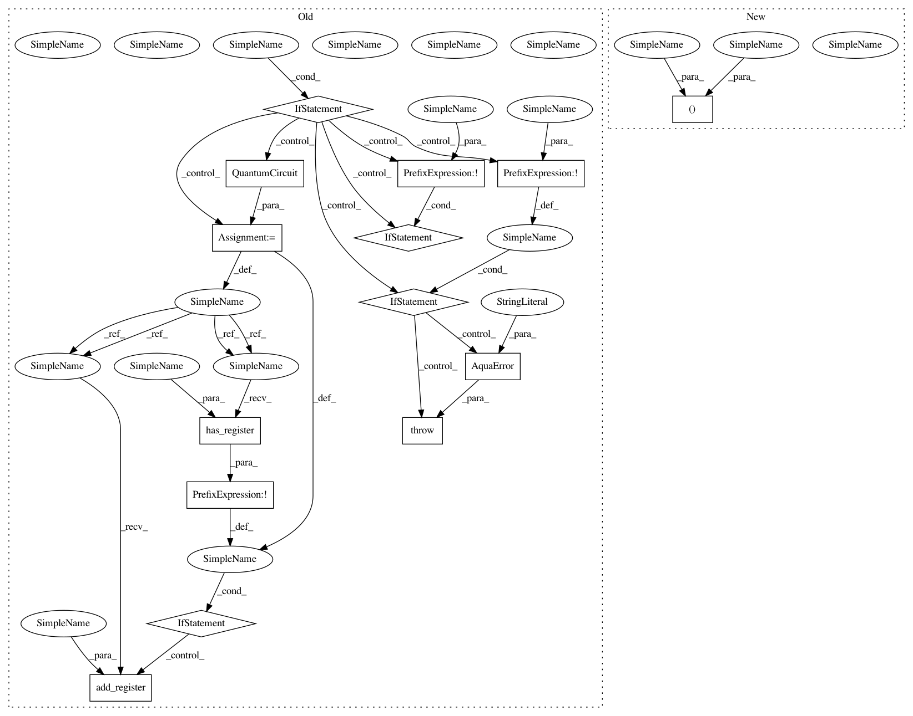

f1b5cac7d034cf174e4af2a260c8feea2e360b00,qiskit/aqua/components/iqfts/standard.py,Standard,construct_circuit,#Standard#Any#Any#Any#,48
Before Change
// so linalg.dft is correct for IQFT
return linalg.dft(2 ** self._num_qubits, scale="sqrtn")
elif mode == "circuit":
if circuit:
if not register:
raise AquaError("A QuantumRegister needs to be specified with the input QuantumCircuit.")
else:
circuit = QuantumCircuit()
if not register:
register = QuantumRegister(self._num_qubits, name="q")
if not circuit.has_register(register):
circuit.add_register(register)
for j in reversed(range(self._num_qubits)):
circuit.u2(0, np.pi, register[j])
for k in reversed(range(j)):
lam = -1.0 * pi / float(2 ** (j - k))
After Change
// so linalg.dft is correct for IQFT
return linalg.dft(2 ** self._num_qubits, scale="sqrtn")
elif mode == "circuit":
circuit, register = set_up(circuit, register, self._num_qubits)
for j in reversed(range(self._num_qubits)):
circuit.u2(0, np.pi, register[j])
In pattern: SUPERPATTERN
Frequency: 4
Non-data size: 14
Instances
Project Name: Qiskit/qiskit-aqua
Commit Name: f1b5cac7d034cf174e4af2a260c8feea2e360b00
Time: 2019-02-13
Author: shaohan.hu@ibm.com
File Name: qiskit/aqua/components/iqfts/standard.py
Class Name: Standard
Method Name: construct_circuit
Project Name: Qiskit/qiskit-aqua
Commit Name: f1b5cac7d034cf174e4af2a260c8feea2e360b00
Time: 2019-02-13
Author: shaohan.hu@ibm.com
File Name: qiskit/aqua/components/iqfts/approximate.py
Class Name: Approximate
Method Name: construct_circuit
Project Name: Qiskit/qiskit-aqua
Commit Name: f1b5cac7d034cf174e4af2a260c8feea2e360b00
Time: 2019-02-13
Author: shaohan.hu@ibm.com
File Name: qiskit/aqua/components/qfts/standard.py
Class Name: Standard
Method Name: construct_circuit
Project Name: Qiskit/qiskit-aqua
Commit Name: f1b5cac7d034cf174e4af2a260c8feea2e360b00
Time: 2019-02-13
Author: shaohan.hu@ibm.com
File Name: qiskit/aqua/components/qfts/approximate.py
Class Name: Approximate
Method Name: construct_circuit